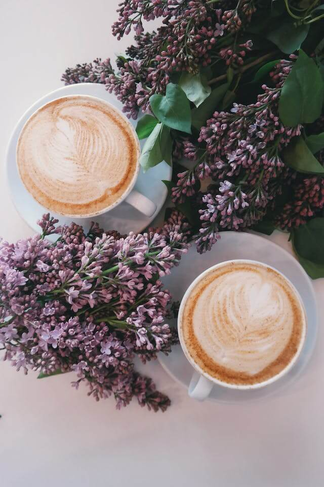
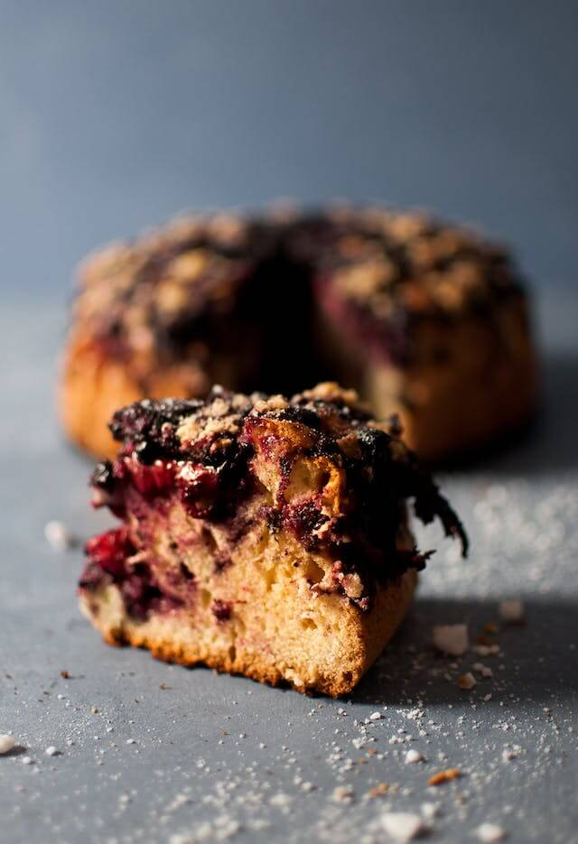
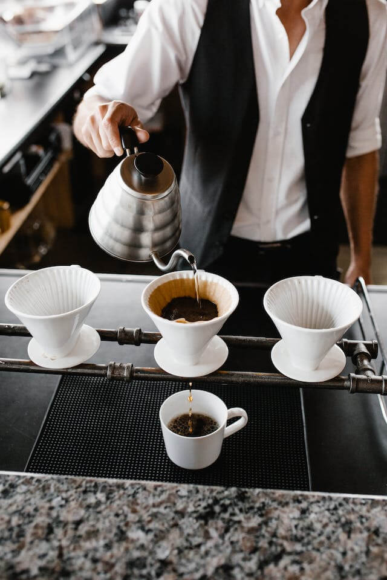
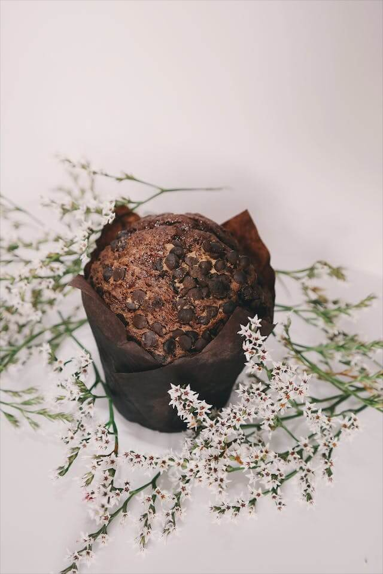
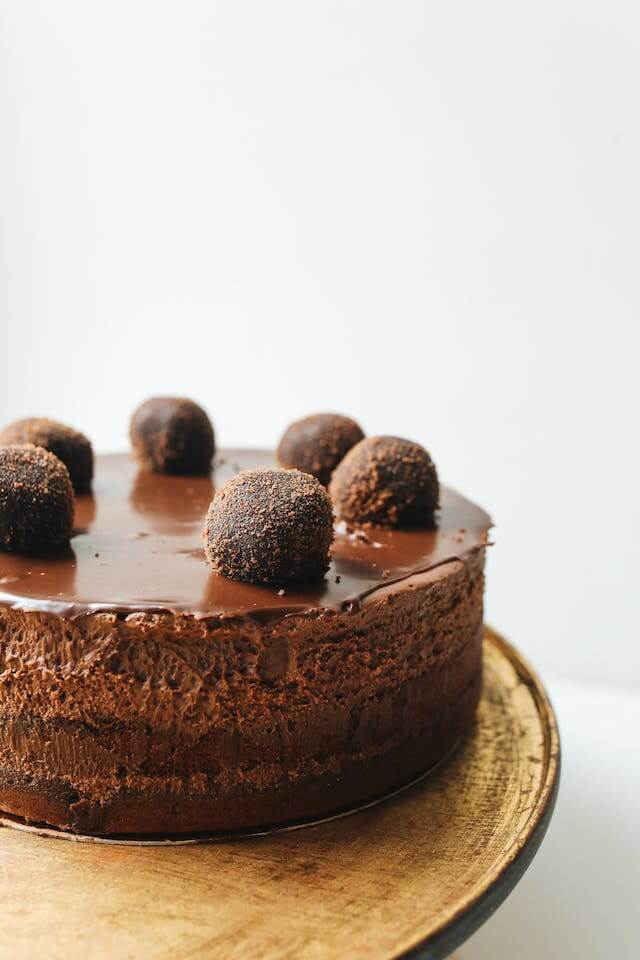
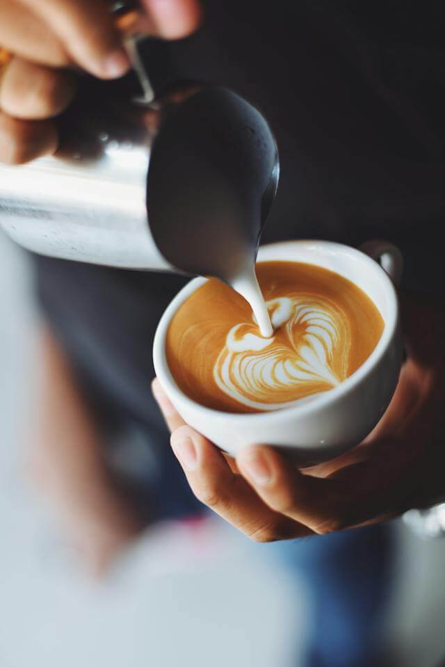
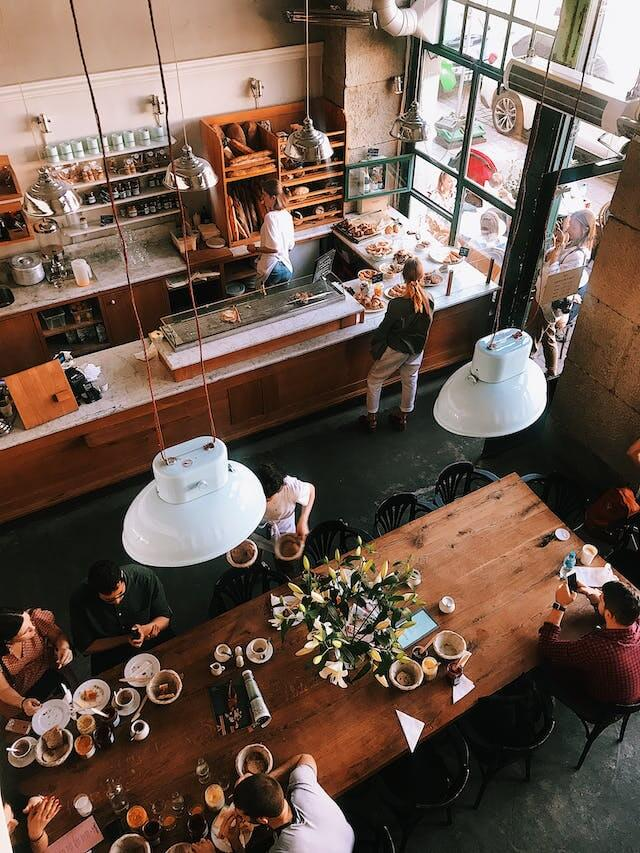

Nuestras Creaciones
      Sobre Nosotros
Nuestra Historia
Desde nuestros humildes inicios en 2009, Café de Autor ha sido un faro en el mundo del café de especialidad. Fundada por un grupo de amantes del café con una visión común, nuestra misión siempre ha sido clara: llevar la excelencia en el café a cada taza.
A lo largo de los años, hemos establecido relaciones directas con fincas cafetaleras en las regiones más destacadas del mundo. Esto nos permite seleccionar granos de la más alta calidad y apoyar a comunidades locales en el proceso. Nuestros tostadores, con años de experiencia perfeccionan cada lote, resaltando los perfiles de sabor únicos de cada origen.
Nuestro Compromiso con el Planeta
En Café de Autor, valoramos la sostenibilidad y la responsabilidad social. Nos esforzamos por operar de manera ética y sostenible, desde la fuente de nuestros granos hasta la taza que servimos. Colaboramos con agricultores comprometidos con prácticas agrícolas respetuosas con el medio ambiente y apoyamos proyectos que benefician a las comunidades cafetaleras.
Además, buscamos crear un espacio acogedor y abierto donde los amantes del café puedan reunirse, aprender y explorar juntos. Nuestro equipo de baristas apasionados está siempre dispuesto a compartir su conocimiento y guiar a los clientes en su viaje de descubrimiento del café.
¡Contáctanos y Reserva tu Mesa!
Representantes o Asesores están disponibles:
Lunes a viernes: 8:00a.m a 8:00p.m.
Sábados y domingos: 9:00a.m. a 3:00p.m.

Solo quieres reservar un pastel de cumpleaños?
Ubicación
Padilla 266, 08025 Barcelona
Proximamente: Balmes 123, 08008 Barcelona